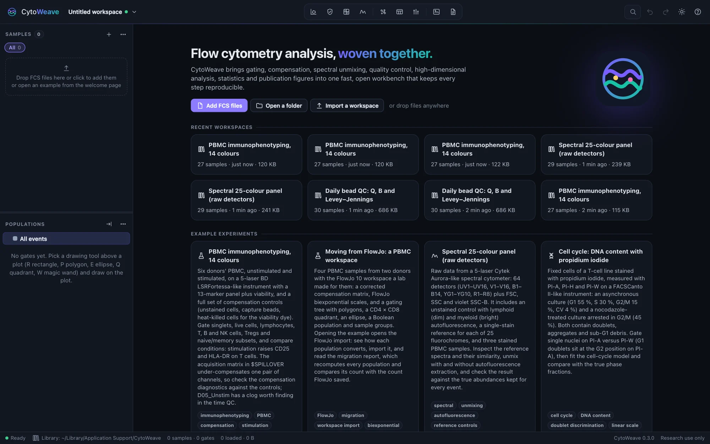
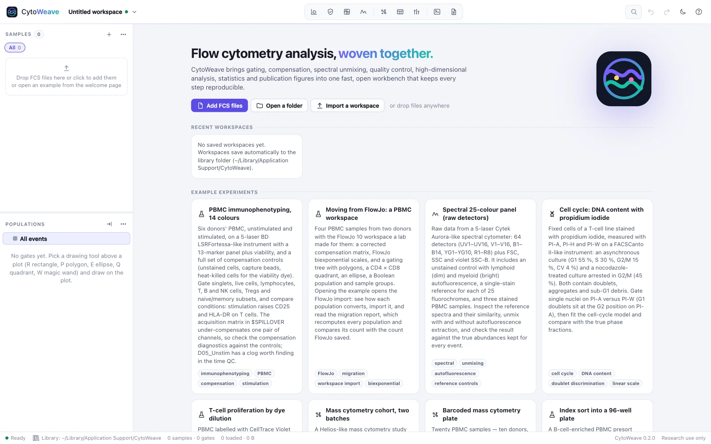

Getting started
Start CytoWeave, find your way around the window, and work through an example experiment before you bring your own data.
Start CytoWeave
If you have not installed it yet, see Install. Then, in a terminal:
$ cytoweaveCytoWeave starts a local server on http://127.0.0.1:8770 (or the next free port) and opens its window. If Chrome, Edge, Brave or Chromium is installed, the window is a desktop app window with its own browser profile; otherwise your default browser opens the address. Closing the window stops the program.
Files and folders named on the command line open directly. Running the command again while CytoWeave is open hands the files to the open window instead of starting a second copy:
$ cytoweave ~/data/2026-09-30_panel1/ ~/data/controls/The window follows your system's light or dark appearance; the moon button at the top right switches it.
The window


- Top bar: the workspace name and its menu (a dot shows whether it is saved), the views, search and commands (⌘K), undo and redo, the theme and the keyboard shortcuts (?).
- Views, left to right: Gate, QC, Compensate, Spectral; Explore, Tables, Compare; Figures and Report. ⌘1 to ⌘9 switch between them.
- Samples (left, top): every sample with its event count, annotations and role, filtered by the group chips above the list. The percentage at the right is the selected population's frequency in that sample. ↑ and ↓ step through the samples.
- Populations (left, below): the gating tree with each population's frequency of its parent and count in the current sample. Right-click a population for everything you can do with it.
- Inspector (right): the selected population's frequency with its 95% confidence interval, its gate (type, axes, origin, exact coordinates you can type), statistics per channel, and the sample's keywords and diagnostics.
- Status bar: where the workspace is saved, the number of samples and gates, and how much sample data is loaded in memory.
⌘\ hides the sidebar and ⇧⌘\ the inspector, for more room. On Windows and Linux, use Ctrl wherever this guide says ⌘.
Example experiments
The quickest way to learn CytoWeave is an example. Open one from the start page, or with Example experiments… in the workspace menu. Each opens as a new workspace.


| Example | What it shows | Try |
|---|---|---|
| PBMC immunophenotyping, 14 colors | Six donors, unstimulated and stimulated, with a full set of compensation controls. The file's spillover matrix has one wrong value, and one sample has a clog. | Check the compensation, QC, Compare |
| Moving from FlowJo | Four PBMC samples with the FlowJo 10 workspace made for them. It opens in the FlowJo import dialog. | The migration report |
| Spectral 25-color panel | Raw data from 64 detectors, 25 single-stain references and an unstained control with lymphoid and myeloid autofluorescence. | Unmixing |
| Cell cycle | Propidium iodide DNA content of an asynchronous and a nocodazole-arrested culture, with doublets and debris. | The cell-cycle model |
| T-cell proliferation | CellTrace Violet dilution over four days, with and without stimulation, and a day-0 reference. | The proliferation model |
| Mass cytometry cohort | Eight subjects in two batches with anchor samples, EQ beads and signal drift; non-classical monocytes are doubled in the case group. | Normalization, Screen clusters |
| Barcoded mass cytometry plate | Twenty samples pooled into one file with palladium barcodes and the barcode key. | Debarcoding |
| Index sort | A presort and the index-sorted events of a 96-well plate. | The plate view |
| Acquisition QC showcase | Four wells: clean, a clog, gradual drift and an air bubble. | Acquisition QC |
| Daily bead QC | Thirty runs of 8-peak beads with every detector's true Q and B; a PMT ages, the flow cell gets dirty and the violet laser weakens. | Q, B and Levey–Jennings |
| Antibody titration and a voltage walk | CD4-PE in ten two-fold steps, and the PE detector walked from 300 V to 750 V, with the binding constant and the detector's noise and gain known. | Titration and voltage walks |
When an example comes with a gating strategy, a notice offers Add suggested gates; take it to start from a finished tree, or gate it yourself. Every example is generated in your browser by a simulator that models instruments, fluorochrome spectra, spillover, autofluorescence, cell populations, dead cells, debris, doublets and acquisition problems, and keeps the true identity of every event. Plots can be colored by the Truth (simulated) channel, so you can see how well your gates agree with the truth.
Your own data
Drop FCS files or a folder on the window, click Add FCS files or Open a folder on the start page, or use the + button of the sample list. Each folder becomes a sample group. Then:
- Annotate the samples: condition, subject, batch, timepoint and so on. Annotations drive groups, pairing and comparisons.
- Mark the controls (unstained, single stain, FMO, beads) and check the compensation in Compensate, or unmix in Spectral.
- Run QC and add its "QC pass" gate at the top of the tree.
- Gate in the Gate view. Gates apply to every sample; switch the scope to This sample to adjust one for one sample.
- Review each important gate across the samples.
- Explore, build Tables and Compare groups as your question needs.
- Build Figures and copy the Report's methods paragraph.
The workspace saves itself to your library as you work; see Workspaces.
Keyboard shortcuts
| Action | Keys |
|---|---|
| Search samples, populations, channels and commands | ⌘K |
| Undo, redo | ⌘Z, ⇧⌘Z |
| Add FCS files, open a saved workspace | ⌘O, ⇧⌘O |
| Save now | ⌘S |
| Previous, next sample | ↑, ↓ |
| Select tool; rectangle, polygon, ellipse, freehand | V; R, P, E, L |
| Quadrant, range, split; magic wand | Q, H, S; W |
| Nudge the selected gate; delete it; rename the population | Arrow keys (with ⇧ for larger steps); ⌫; F2 |
| Backgate | B |
| Go to a view | ⌘1 … ⌘9 |
| All shortcuts | ? |